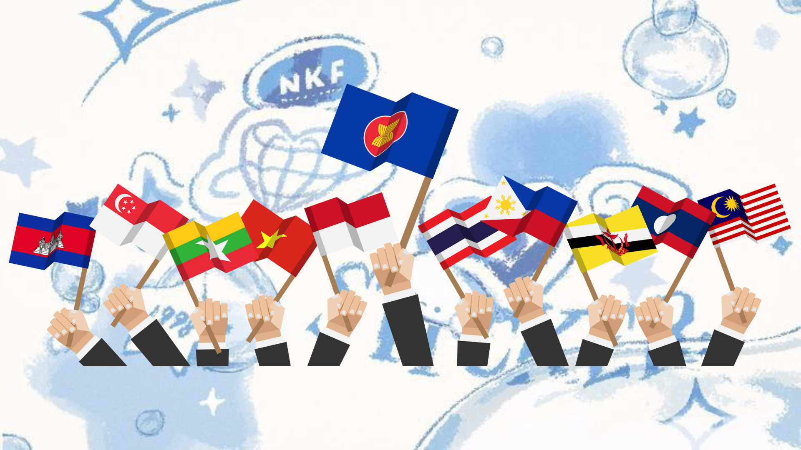

-

-


Pengertian:
Kerjasama regional merupakan bentuk interaksi antarnegara dalam suatu wilayah geografis tertentu yang bertujuan untuk mencapai tujuan bersama. Kerjasama ini melibatkan lebih dari dua negara dan umumnya diwujudkan melalui pembentukan organisasi regional atau perjanjian regional.

Tujuan kerjasama Regional:
1. Integrasi ekonomi → Membentuk pasar tunggal, memperlancar arus perdagangan, dan meningkatkan investasi.
2. Keamanan regional → Menjaga stabilitas dan keamanan kawasan, serta mencegah konflik.
3. Kerjasama sosial dan budaya → Meningkatkan hubungan antar masyarakat, pertukaran budaya, dan pengembangan sumber daya manusia.
4. Lingkungan hidup → Melindungi lingkungan hidup dan mengatasi masalah-masalah lingkungan secara bersama-sama.

Manfaat kerjasama Regional:
1. Peningkatan kesejahteraan → Meningkatkan taraf hidup masyarakat melalui pertumbuhan ekonomi dan pembangunan sosial.
2. Penguatan posisi tawar-menawar → Meningkatkan pengaruh di tingkat global.
3. Penyelesaian konflik secara damai → Menyediakan forum untuk menyelesaikan perselisihan secara damai.
4. Promosi nilai-nilai universal → Mendorong terwujudnya perdamaian, demokrasi, dan hak asasi manusia.

Contoh konkret:
1. ASEAN → Kerja sama ekonomi, sosial, dan budaya antar negara-negara Asia Tenggara. Contohnya, pembentukan ASEAN Free Trade Area (AFTA) untuk memfasilitasi perdagangan bebas di kawasan.
2. Uni Eropa → Integrasi ekonomi dan politik antar negara-negara Eropa. Contohnya, penggunaan mata uang Euro sebagai mata uang bersama.
3. NAFTA (North American Free Trade Agreement) → Perjanjian perdagangan bebas antara Amerika Serikat, Kanada, dan Meksiko.